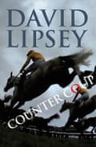

David Lipsey, who has died aged 77, was a significant and influential Labour party adviser, a political journalist and then a member of the House of Lords for 25 years. Early in his professional life he recognised that despite a passionate interest in politics and public affairs, he had no wish to become an MP. He was thus that rare creature who wanted to improve the lives of others without being necessarily bothered about advancing his own career.
He became nevertheless one of the best connected Labour figures of his generation, and gravitated from being a speechwriter in Whitehall and Downing Street – where he wrote the party’s manifesto for the 1979 general election – to a hugely successful career in old Fleet Street, before then being appointed to the Lords, as one of “Tony’s cronies”, by Blair in 1999. Like his first mentor, the former foreign secretary, Anthony Crosland, he was a radical egalitarian, and always tried to put what he believed to be the best thing to do above any ideological consideration. He was clever, clear thinking, serious-minded and the most enormous fun. His centrist political stance was constant throughout his life: he once observed, somewhat dolefully, that he was at one time regarded in Labour circles as a proto-fascist for his rightwing views and then was subsequently held to be “a dangerous lefty”, yet without ever having changed his mind on much.
As a “jobbing peer” – his phrase – he was remorselessly busy and at one point calculated that he had a total of 22 different professional and unpaid posts. His many friends teased him about not having enough fingers for the pies with which he was involved. As a young government policy wonk he had set about ensuring that more Labour names were added to the civil service list of the so-called “great and the good”, people who were awarded exactly the sort of public appointments with which his own later years would be garlanded.
In the Lords he listed his interests as including culture, media, sport, parliament, government, politics, health, medicine and social services. He served on three public inquiries: on the long term care of elderly people (1997-99), on the voting system (1997-98) and on the future funding of the BBC (1999). His minority report on social care would later bear a striking resemblance to the findings of Andrew Dilnot’s review in 2011 , accepted by the then government but never implemented. He regarded his work on voting reform as “the greatest failure among a number of failures in my political life”, blaming the decision to retain the current “indefensible” system after the 2011 alternative vote referendum – resulting from the inquiry – on the ineptitude of the then deputy prime minister, Nick Clegg.
As well as being a prolific essayist, he published a number of books including The Secret Treasury (2000), on how the British economy is run; In the Corridors of Power (2012), a highly entertaining memoir; and Counter Coup (2014), a Dick Francis pastiche on horse racing. He also jointly owned and raced horses and greyhounds, played a deceptively excellent game of golf and for four years in his 60s drove a sulky, the lightweight cart used in harness-racing in Wales, triumphantly winning on seven occasions. He was introduced to horse racing at Cheltenham by his godmother (who was less successful with her appointed spiritual task) and fell for it when Bolshoi emerged from fog to gallop home at 20-1.
When he arrived in Westminster in 1972 – a “callow, gauche, thin, neurotic geek of 24” as he described himself – he was among the first “chocolate soldiers”, political advisers then financed by the Joseph Rowntree Trust, who were the trailblazers for today’s professional political class. With a first in philosophy, politics and economics from Magdalen College, Oxford, to which he had won a scholarship, and with two years’ experience in the research department of the General and Municipal Workers Union (now the General, Municipal and Boilermakers), he was appointed to work for Crosland, then shadow environment secretary and one of the leading Labour intellectuals of his day.
He became Crosland’s eyes and ears, as well as his speechwriter and spokesman, in opposition and in government from 1974, winning the exceptional status of being trusted by the civil service and the media as well as by his minister, with whom he was wholly in accord. He ran Crosland’s unsuccessful campaign for the Labour leadership on Harold Wilson’s resignation in 1976, and when his candidate came bottom in the poll sought distraction at Wimbledon greyhound stadium, acquiring his subsequent lifetime’s devotion to both the dogs and the sport. He accompanied Crosland to the Foreign Office, and on his unexpected death in 1977 joined James Callaghan’s Downing Street team. He regarded this as an honour, if less of a pleasure than his previous post, since “Uncle Jim” Callaghan had what Lipsey called an ambiguous relationship with academic intelligence, which others saw as a tendency to bully. He was known affectionately as “the Man from Uncle”.
In the aftermath of Labour’s loss of the 1979 election, Lipsey became industrial correspondent of New Society, before joining the Sunday Times in 1980, first on the political staff and then as economics editor. He returned to New Society as editor and chief executive in 1988, seeking unsuccessfully to save the magazine’s independence before it merged with the New Statesman .
He then helped found the Sunday Correspondent, of which he was one of the joint deputy editors during its brief life from 1988 to 1990, winning plaudits for the clout, contacts and classy staff he brought to the new publication. From 1990 to 1992 he was associate editor and acting deputy editor of the Times, a post he found difficult because of a clash of temperament with the then editor, Simon Jenkins, but thereafter he thought he had “died and gone to heaven” during seven years on the Economist. As the political editor for four years from 1994 he wrote the Bagehot column, for which he won an Orwell prize in 1997; until joining the Lords he was public policy editor.
Lipsey was a visiting professor at the universities of Ulster (1993-98), and Salford (2008-12), a visiting fellow at London School of Economics (2002-04) and at Harvard (2011). Among a wide range of other financial, media, artistic and sporting organisations reflecting his many interests, he was on the council of the Advertising Standards Authority (1999-2005), chaired Make Votes Count (1999-2008), the Social Market Foundation (2001-10), the British Greyhound Racing Board (2004-08) and the Campaign for Straight Statistics (2009–12).
Born in Stroud, David was the elder of two sons of Penelope (nee Rawson) and Lawrence Lipsey. His father was a Canadian non-practising Jew who came to the UK to join the forces in the second world war, fought at Monte Cassino, and settled in Gloucestershire, having met his future wife. He made a comfortable living from a business recycling kapok stuffing and later manufacturing furniture, and David went to Wycliffe preparatory school before becoming a boarder at Bryanston school.
His parents were thoughtful and interested in politics, and introduced their sons to the subject by taking them both to Labour and Conservative party meetings in the 1959 election. The family were escorted from the hall at the Conservative meeting when Lipsey senior heckled the candidate about the cost of the controversial Blue Streak ballistic missile project. David subsequently stood for Labour in the 1964 and 1966 elections at school and joined the party aged 17. He was head boy at Bryanston and before going to Oxford spent a year teaching English as a second language in Bradford. He went to the city as a party member and left as a fully fledged socialist.
Lipsey founded a newspaper, the Federalist, while at school and in a curious coincidence interviewed Crosland, then education secretary and committed to abolishing public schools. Asked if his policy extended to prep schools, the minister replied that it did, and his young interviewer reported him as responding that they were “stinking breeding grounds of sodomy”. Years later Lipsey, the political adviser, would come across a Crosland speech and realise that he had misheard the last word; it should have been “snobbery”.
He married his second wife, Margaret (formerly Robson, nee Fazakerley), whom he met through Streatham Labour party, of which he was the secretary from 1970 to 1972, in 1982; he was married previously to Elizabeth, his girlfriend from Gloucestershire and at Oxford.
He is survived by Margaret, their daughter, Becky, and two stepsons.